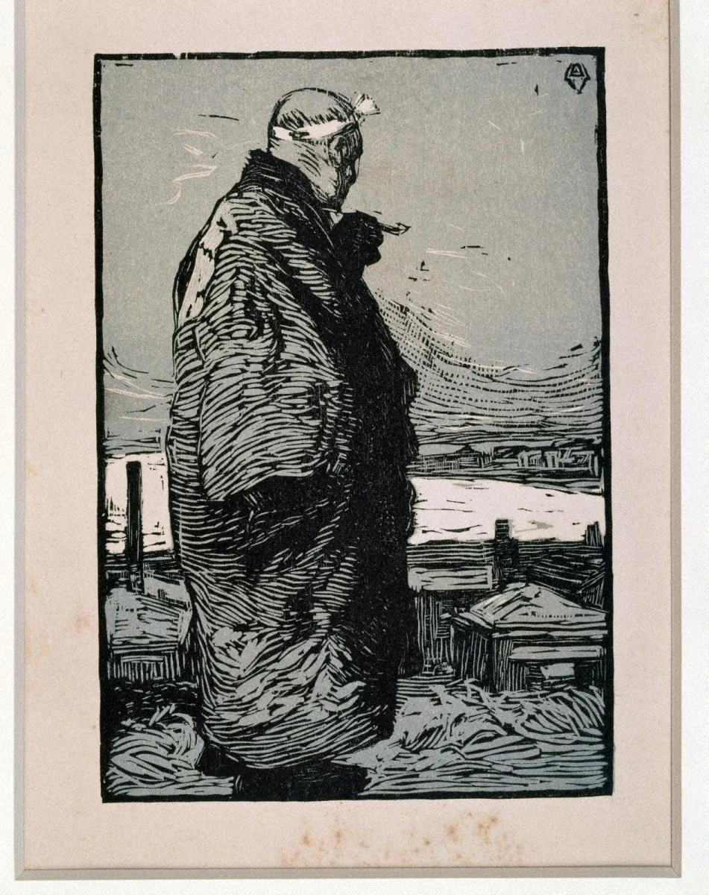
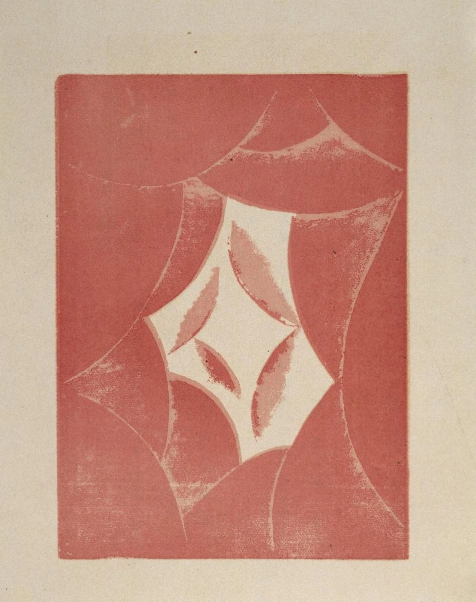
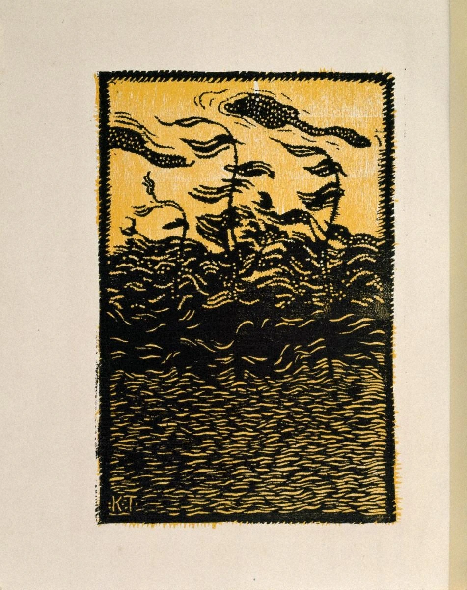

彫った線で、衣服の量感を作る。
人物の衣服を覆う白黒の細い線が、肩から腕、裾へと曲がりながら重なっています。輪郭線だけでなく、線の方向と密度で身体の重さを見せます。
本文試作・実作品画像3点収録 / 代表画像セットは整備中 · 2026-11-01
歴史的な版画運動・制作理念
創作版画
版画は、板などにつくった形を、紙に写してつくる絵です。
絵をかく人、板を彫る人、紙に写す人で、仕事を分けるつくり方もあります。
創作版画では、作家が自分で考え、自分でつくることを大切にしました。
ただし、実際に誰がどの仕事をしたかは、一枚ずつ調べる必要があります。
LOOK AT THE WORK / 実作品を見る

画像を表示できませんでした。下の所蔵元リンクから作品を確認できます。
SŌSAKU-HANGA / WOODCUT · 1904年（館の制作年）
山本鼎 / 愛知県美術館
愛知県美術館蔵 JP199100056000。木版・紙。1904年（館の制作年）。印刷面と周囲の紙を含む所蔵個体の画像です。
人物の衣服を覆う白黒の細い線が、肩から腕、裾へと曲がりながら重なっています。輪郭線だけでなく、線の方向と密度で身体の重さを見せます。
手前の人物が縦長の画面を大きく占め、右側には低い家並みと水面が開けます。濃い衣服と明るい水面の差が、人物を前へ押し出します。
館の制作年は1904年ですが、その欄だけでこの一枚が摺られた年を独立に確定したとはしません。上田市立美術館の1988年後摺りとは別の所蔵個体です。
形・色・構図の解説は掲載画像の観察です。制作年、刊行年、当該個体の摺り年を分け、記録にない工程は推測しません。
山本鼎《漁夫》1904年（館の制作年）、愛知県美術館蔵（JP199100056000）。Public Domain Mark 1.0。
所蔵元の作品解説 ↗原作品と当該公開画像の個別Public Domain表示を確認。所蔵館クレジット・変更表示を添付し、第三者権利の留保を維持。確認日 2026-11-01。
公式配信の原JPEGは無加工で保持し、拡大リンクから取得できます。ページ表示には縦横比と全画面を保った縮小WebPを使用（切り抜き・色補正なし）。原JPEGと各表示画像のサイズ・SHA-256を権利台帳に別記録。撮影者名は未確認のため推定しません。
美術館の公開画像利用方針 / Public Domain Mark / 収録画像の権利台帳
所蔵館の個別Public Domain表示と公開画像利用方針。全地域・第三者権利の無条件保証とはしない。
LOOK AT THE WORK / 実作品を見る

画像を表示できませんでした。下の所蔵元リンクから作品を確認できます。
SŌSAKU-HANGA / WOODCUT · 1915年（館の制作年）
恩地孝四郎 / 愛知県美術館
愛知県美術館蔵 JP199100038067。木版・紙。1915年（館の制作年）。印刷面と周囲の紙を含む所蔵個体の画像です。
赤い矩形の内側を曲線が分け、中央に明るい不規則な形が残されています。具体的な風景を再現するのではなく、色面どうしの関係から画面を読みます。
外側の大きな弧と、中心の小さな尖った形が呼応します。滑らかな境界と、かすれた色の縁が同居し、均一なデジタル図形とは異なる表面を見せます。
この一枚は1915年の公刊『月映』Vに属する所蔵個体です。私輯と公刊版、作品の理念と実際の印刷工程を分け、全てを作者の自摺と決め付けません。
形・色・構図の解説は掲載画像の観察です。制作年、刊行年、当該個体の摺り年を分け、記録にない工程は推測しません。
恩地孝四郎《抒情 あかるい時『月映』Vより》1915年（館の制作年）、愛知県美術館蔵（JP199100038067）。Public Domain Mark 1.0。
所蔵元の作品解説 ↗原作品と当該公開画像の個別Public Domain表示を確認。所蔵館クレジット・変更表示を添付し、第三者権利の留保を維持。確認日 2026-11-01。
公式配信の原JPEGは無加工で保持し、拡大リンクから取得できます。ページ表示には縦横比と全画面を保った縮小WebPを使用（切り抜き・色補正なし）。原JPEGと各表示画像のサイズ・SHA-256を権利台帳に別記録。撮影者名は未確認のため推定しません。
美術館の公開画像利用方針 / Public Domain Mark / 収録画像の権利台帳
所蔵館の個別Public Domain表示と公開画像利用方針。全地域・第三者権利の無条件保証とはしない。
LOOK AT THE WORK / 実作品を見る

画像を表示できませんでした。下の所蔵元リンクから作品を確認できます。
SŌSAKU-HANGA / WOODCUT · 1913年（館の制作年。公刊年とは区別）
田中恭吉 / 愛知県美術館
愛知県美術館蔵 JP199100038004。木版・紙。1913年（館の制作年。公刊年とは区別）。印刷面と周囲の紙を含む所蔵個体の画像です。
明るい上部と、黒い形が密集する下部を対照させています。色数を抑えながら、面の明暗で画面の緊張を作ります。
下部を埋める波状の線と、上部の木や雲のような形の曲がりが呼応します。写実的な遠近だけでなく、線の反復と変形で情感を伝える風景として読みます。
愛知県美術館の制作年は1913年で、所蔵記録は『月映』Iに結び付けています。作品の制作年と、1914–1915年に展開した公刊誌の刊行時期を混同しません。
形・色・構図の解説は掲載画像の観察です。制作年、刊行年、当該個体の摺り年を分け、記録にない工程は推測しません。
田中恭吉《病める夕 『月映』I》1913年（館の制作年。公刊年とは区別）、愛知県美術館蔵（JP199100038004）。Public Domain Mark 1.0。
所蔵元の作品解説 ↗原作品と当該公開画像の個別Public Domain表示を確認。所蔵館クレジット・変更表示を添付し、第三者権利の留保を維持。確認日 2026-11-01。
公式配信の原JPEGは無加工で保持し、拡大リンクから取得できます。ページ表示には縦横比と全画面を保った縮小WebPを使用（切り抜き・色補正なし）。原JPEGと各表示画像のサイズ・SHA-256を権利台帳に別記録。撮影者名は未確認のため推定しません。
美術館の公開画像利用方針 / Public Domain Mark / 収録画像の権利台帳
所蔵館の個別Public Domain表示と公開画像利用方針。全地域・第三者権利の無条件保証とはしない。
作品の知名度や画像の入手しやすさだけで選びません。紹介したい作品と、調べて分かったことをまとめました。画像を載せられるかどうかは、別に確かめています。画像の利用許諾を確認できていないものは掲載していません。
初期の人物を描いた木版、具体的なものの形を描かない色の面、詩と版画を組み合わせた冊子の情感ある風景を比べます。3点とも実画像を確認済みです。目標の3〜5点のうち、最低数の3点に達した最初の比較セットです。ただし、運動全体、石版画、戦後の展開をすべてカバーするものではありません。
《漁夫》は、魚をとる人を表した版画です。
自分で考え、自分でつくる版画の、大切な出発点として紹介されています。
木版・人物表現と運動の出発点
美術館が、作家自身による制作を大切にする創作版画の出発点として扱う作品です。1904年の図案と発表、今残る一枚が刷られた年代、作者と摺師（すりし、版から紙に刷る人）の役割を分けて見ます。
愛知県美術館JP199100056000。木版・紙です。元の記録の制作年だけで、この一枚が刷られた年まで別に確かめられたとは考えません。上田市立美術館の1988年の後刷り（摺：鉄井孝之）とは別の個体です。画像は取得し、実際に確認済みです。
人や景色の姿をそのまま写すのではなく、心の中の気持ちを色と形で表しています。
『月映』という冊子で発表された作品です。
非具象の木版・詩と版画の雑誌
人物や風景を写すだけでなく、心の中の感情を色と形で表す版画の例です。APJの作家解説は、抒情（じょじょう）シリーズの代表作として扱っています。誌面で発表された作品なので、一枚の図と、冊子の中での役割を分けて確かめます。
愛知県美術館JP199100038067。木版・紙、13.5×9.6です。一般向けに刊行された版の制作工程と、自分で刷るという理念を同じものとは考えません。画像は取得し、実際に確認済みです。
上から橋を見下ろすようにかかれた版画です。
石の版を使い、吹雪の夜の空気をやわらかく伝えています。
石版・地域の風景
島根県立美術館が、創作版画の具体例として選んだ作品です。館は、橋を見下ろす構図と、吹雪の空気を伝える石版の柔らかな表現を説明しています。創作版画を、木版の強い彫り跡や抽象的な表現だけに限らないための候補です。
島根県立美術館所蔵。石版・紙です。館の作品紹介と展示目録で、題名・年・技法を確認しました。登録番号は未確定で、検索一覧にある別題の《松江大橋》の番号は使いません。ここで示すのは館の解説を読むための着眼点です。画像を取得し、実際に見たとはしていません。
詩と版画を載せた『月映』に関わる作品です。
田中恭吉が、曲がった線を使って風景を表しました。
木版・情感ある風景と版画誌
詩と版画の冊子『月映（つくはえ）』に関わった田中恭吉の作品で、所蔵されたこの一枚を対象にします。山本の人物、恩地の具体的な物を描かない表現と比べ、曲がった線を風景へ広げる例として見ます。
愛知県美術館JP199100038004。制作年の1913と、公刊誌が発行された時期を区別します。この一枚が刷られた年と、印刷の担当者は未確定です。
自分で描き、彫り、刷る。創作版画（そうさくはんが）は、作家自身の考えと制作を大切にし、版画ならではの表現を広げようとした運動です。その理想と、実際の作り方の両方を確かめます。分業で作る版画に、作家の表現がないという意味ではありません。
山本鼎（やまもとかなえ）が1904年に『明星』へ発表した《漁夫（ぎょふ）》は、創作版画の出発点を示す代表作として、美術館で紹介されています。版画誌や文芸誌も、新しい表現を伝える場所になりました。恩地孝四郎（おんちこうしろう）・田中恭吉（たなかきょうきち）・藤森静雄（ふじもりしずお）が関わった『月映（つくはえ）』（1914–1915）は、詩と版画を冊子で発表する場でした。
東京国立近代美術館の展覧会解説は、仲間内で作った私輯（ししゅう）と、洛陽堂（らくようどう）が出版した版を区別しています。出版された版では、機械印刷も使われました。「自画・自刻・自摺（じが・じこく・じずり）」は、自分で描き、彫り、刷るという理想を表す言葉です。ただし、それだけで全作品の実際の工程は決められません。
また、機械印刷を使ったという情報だけでは、誰が刷ったかは分かりません。そのため「作者自身が刷っていない」とも断定できません。
以下は観察のための問いです。すべての作品に共通する固定ルールや、未取得画像の実見結果ではありません。
一色で刷ってあれば創作版画、とは判断できません。美術館は、恩地の〈抒情（じょじょう）〉では、色と形が心の中の感情を表すと説明しています。使った版の数、刷り方、色の材料は、作品ごとに確かめます。
版画誌は、文字と絵を組み合わせて発表する場でした。絵だけを切り離さず、どの号の何ページか、誰が作品や文章を寄せたかも確認します。
《漁夫》の細い白黒の線、《抒情 あかるい時》の曲線と色の面、《病める夕》の波のような線を比べてみましょう。同じ木版でも、人物を描く、具体的な物の姿を離れて表す、風景に気持ちを込めるなど、違う使い方があります。
掲載した3点では、人物と背景の大きさの関係、物の姿を描かない色の面、風景を表す線の密度を比べます。未掲載の候補である織田一磨（おだかずま）の石版画は、別に記しています。この運動が木版だけではないと分かる例です。
COMPARE
浮世絵の木版画で発達した分業と、自分で制作することを重視した創作版画を、どちらが優れているかという順番で並べません。また、「自摺」を掲げる運動の作品でも、現在残る一枚が、後の時代に別の摺師（すりし：版から紙へ刷る人）によって刷られた場合があります。運動の理想と、その一枚がたどった歴史は分けて調べます。
項目を横に並べる ↗READ TODAY
現代の版画や複製を見るときにも、図案を作った年だけでなく、誰がいつ彫り、いつ刷ったのかを確かめる姿勢が役立ちます。
このページを書くときに使った資料です。作品の説明、画像を入手できたかどうか、画像を使う条件は、それぞれ別に確かめています。検索結果で読んだ情報と、元のページを開いて確かめた情報も、調査の記録で分けています。
この項目の収録実画像：3点（図鑑全体：28点）。参照・関連実作品はこの項目0点（図鑑全体2点）。代表作品画像セットの数には含めません。